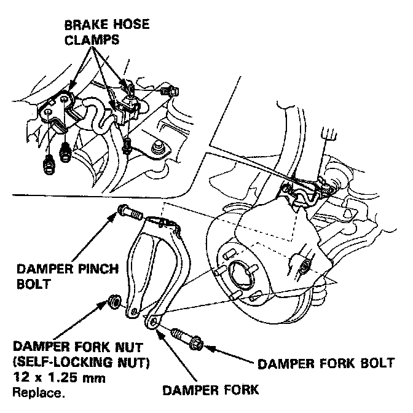
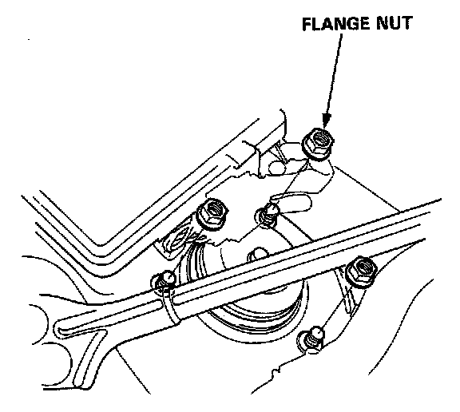

Removal
Front Damper
Removal
1. Remove the brake hose clamps from the damper.
2. Remove the damper pinch bolt.

3. Remove the damper fork bolt, nut and remove the damper fork.
4. Remove the damper by removing the three flange nuts.

NOTE: Mark the right and left dampers or store them separately. Do not confuse them on installation.